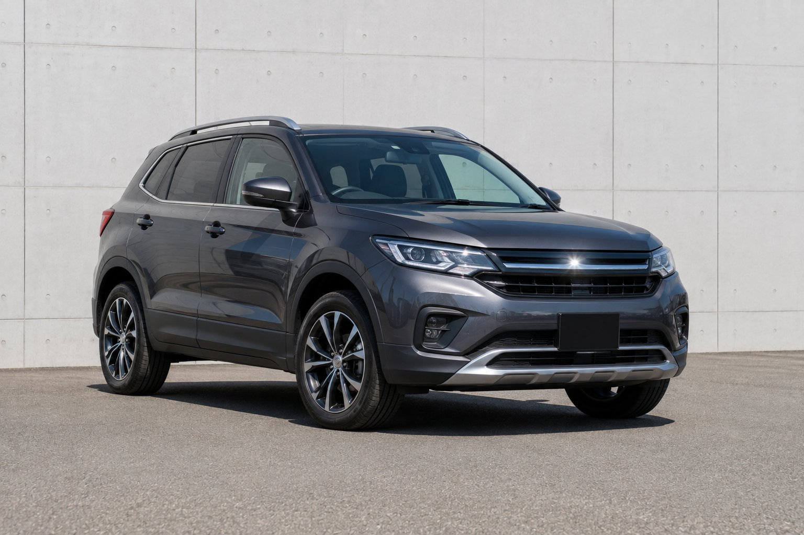
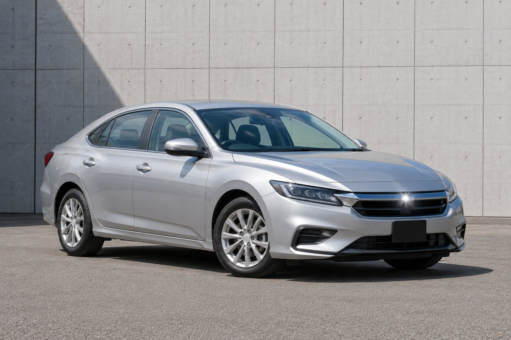
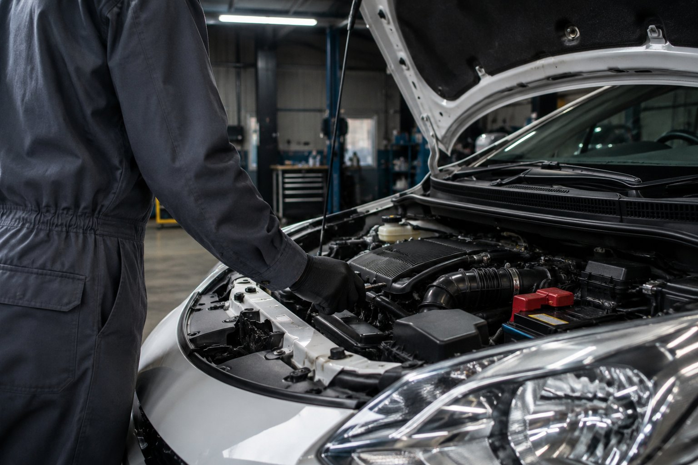

01 Sales
販売
常時60台前後を店頭とWebに掲載。表示価格は登録費用・整備費用込みの支払総額です。追加費用が後から発生することはありません（県外登録は別途、詳しくは在庫欄に記載）。
About
2011年の創業から福井市中央で営業しています。仕入れから店頭販売、下取り・買取査定、車検・整備、任意保険の取扱までを自社スタッフで一貫して行っているので、乗り換えの相談も整備の相談も、この1店で完結します。
01 Sales
常時60台前後を店頭とWebに掲載。表示価格は登録費用・整備費用込みの支払総額です。追加費用が後から発生することはありません（県外登録は別途、詳しくは在庫欄に記載）。
02 Buy-back
査定は所要30分。その場で概算金額をお出しします。契約は後日でも構いません。福井県内は出張査定も無料で承ります。
03 Maintenance
国家二級整備士4名が常駐。車検は法定費用込みの総額でご案内し、代車も無料で貸し出します（要予約）。他店でご購入の車も承ります。
Stock
価格はすべて車検・登録費用・納車整備費用込みの支払総額（税込）です。県外にお住まいの場合は登録費用が別途かかります。掲載は一例で、他にも在庫があります。
※ ここに掲載の車種・年式・金額はすべて架空のサンプルです。実在の在庫ではありません。
軽ハイトワゴン・ターボ
パールホワイト／両側パワースライド
支払総額（税込）
89.8万円

保証付きコンパクトSUV・4WD
ダークグレー／寒冷地仕様
支払総額（税込）
148.0万円
ミニバン・8人乗り
パールブラック／両側電動スライド
支払総額（税込）
168.5万円

保証付き※ 表示価格は店頭・Web共通の支払総額です。県外への登録・納車は別途費用がかかります（詳しくはお問い合わせください）。掲載車は入れ替わりが早いため、確実にご覧いただくには来店前にお問い合わせください。
Buy-back / Appraisal
年式・走行距離・修復歴の有無・市場相場をその場で確認し、概算金額を提示します。契約は後日で構いません。他店で見積りを取っている場合はその金額もお聞かせください。

Flow
電話・チャット・フォームのいずれでも。車種・年式・走行距離をお知らせください。
店頭持ち込み、またはご自宅への出張で拝見します。所要時間は約30分です。
その場で概算金額をお伝えします。他店見積りとの比較も歓迎です。
ご納得いただければ契約。名義変更・廃車手続きも代行します。
Inspection / Maintenance
国家二級整備士が自社ピットで点検します。法定費用（自賠責保険・重量税・印紙代）込みの総額でお見積りし、当日追加費用が出た場合は必ず作業前にご説明します。
| 区分 | 総額目安（法定費用込・税込） | 代車 |
|---|---|---|
| 軽自動車 | 58,000円〜 | 無料（要予約・台数に限りあり） |
| 普通車（〜1.5t） | 78,000円〜 | 無料（要予約・台数に限りあり） |
| 普通車（1.5t超〜2t） | 92,000円〜 | 無料（要予約・台数に限りあり） |
| 12ヶ月点検（車検年以外） | 16,500円〜 | 要相談 |
※ 部品交換が必要な場合は上記に追加費用が発生します。見積り後、承諾なしに作業は進めません。所要は通常1〜2日、代車利用の場合は最大1週間お預かりすることがあります。
Loan / Warranty
ローンは頭金0円から組めます。審査は最短30分、来店不要のオンライン仮審査もご利用いただけます。
※ ローンの可否・金利は信販会社の審査結果によります。掲載の年率・審査時間は目安です。
Access